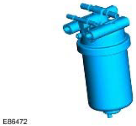
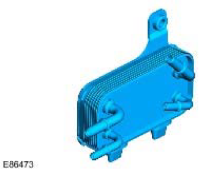

Specifications
| Description | Nm | lb-ft |
|---|---|---|
| Fuel level sender locking ring | 35 | 26 |
| Fuel tank support bracket bolts | 45 | 33 |
| Fuel tank support bracket nuts | 25 | 18 |
Fuel Tank and Lines - 2.4L Duratorq-TDCi (Puma) Diesel
COMPONENT LOCATION

| Item | Part Number | Description |
|---|---|---|
| A | 110 Variant | |
| B | 90 Variant | |
| 1 | Fuel cooler | |
| 2 | Fuel filter | |
| 3 | Fuel tank |
OVERVIEW
The fuel delivery system comprises fuel filler pipe and hose, fuel tank, (including sender assembly and breather system), fuel filter, fuel cooler, priming valve and connecting fuel lines.
The fuel system supplies fuel to the engine via a lift pump which is integral to the engine mounted injector pump. The fuel system is a depression system with the inlet pressure at the transfer pump being -30 to -20 kPa.
Return flow from the engine is returned to the filter. To prevent filter waxing at low temperatures a thermostatic diverter routes the warmed return flow back through the filter to the engine. At higher temperatures the return flow is diverted back to the tank.
FUEL FILLER AND CAP
The fuel filler is located in the right hand rear quarter panel, behind an access flap. The flap is opened electrically using a switch on the fascia which operates a release solenoid.
The filler is closed by a threaded plastic cap which screws into the filler neck. The cap has a ratchet mechanism to prevent over tightening and seals against the filler neck to prevent the escape of fuel vapor. The filler cap has a valve which relieves fuel pressure to atmosphere at approximately 0.12 to 0.13 bar (1.8 to 2.0 lbf.in²) and opens in the opposite direction at approximately 0.04 bar (0.7 lbf.in²) vacuum.
A High Density Polyethylene (HDPE) molded filler tube connects the filler to the tank via a flexible hose.
FUEL TANK
The fuel tank is located at the rear underside of the vehicle between the chassis longitudinals.
The cradle is attached to the chassis with six screws. When the cradle is attached to the chassis, the tank is positively secured via foam pads which bear against the central chassis cross beam. A protective cover is fitted to the front right hand corner of the tank and provides additional protection.
The fuel tank is manufactured from HDPE. The tank is a sealed unit with the only internal access being via the pump module flange aperture on the top of the tank.
A reflective metallic covering is attached to the tank with two scrivets to shield the tank from heat generated by the exhaust system.
Fuel Tank Capacities
| Variant | Fuel Tank Capacity |
|---|---|
| 90 | 56 liters (13.2 gallons) |
| 110 | 70 liters (16.2 gallons) |
FUEL TANK BREATHER SYSTEM
The filler tube incorporates a tank vent which allows air and fuel vapor displaced from the tank when filling to vent to atmosphere via the filler neck.
A breather spout within the tank controls the tank 'full' height. When fuel covers the spout it prevents fuel vapor and air from escaping from the tank. This causes the fuel to 'back-up' in the filler tube and shuts off the filler gun. The position of the spout ensures that when the filler gun shuts off, a vapor space of approximately 10% of the tanks total capacity remains. The vapor space ensures that the Roll over Valve (ROV) is always above the fuel level and vapor can escape and allow the tank to breathe.
The ROV is welded on the top surface of the tank. The ROV is connected to the atmospheric vent pipe. The ROV allows fuel vapor to pass through it during normal vehicle operation. In the event of the vehicle being overturned the valve shuts off, sealing the tank and preventing fuel from spilling from the atmospheric vent pipe.
The atmospheric vent pipe includes a two-way valve which allows for over-pressure relief one way and allows for air to enter the tank as the system operates in depression.
FUEL LEVEL SENSOR
The fuel gauge sender unit is located inside the tank. The sender module is accessed and assembled by an aperture in the top of the tank. The module flange is locked in place and sealed by a steel locking ring.
The fuel sender assembly comprises a top cover flange which locates the electrical connector for the sender and two steel fuel pipe couplings.
The flange is sealed by a rubber seal positioned between the flange and the locking ring housing.
The top cover is attached to the swirl pot assembly by two spring loaded steel pillars. The springs ensure the swirl pot locates positively on the bottom of the tank.
The swirl pot is capped by a housing which locates the fuel gauge sender unit.
The function of the swirl pot is to act as a fuel reserve ensuring the fuel pick-up is always covered by fuel. This is achieved by the return flow being directed into the swirl pot and a jet pump provides additional flow into the pot from the fuel remaining in the tank, the jet pump is powered by the return flow. In addition a non-return valve is located in the base of the swirl pot assembly. When the fuel tank is full, fuel pressure keeps the valve lifted from its seat allowing fuel to flow into the swirl pot. As the tank level reduces, the fuel pressure in the tank reduces causing the valve to close. When the valve is closed fuel is retained in the swirl pot.
Flexible pipes connected to the top cover provide the feed and return from the swirl pot.
The fuel gauge sender unit comprises a potentiometer operated by a float.. The float rises and falls with the fuel level in the tank and moves the potentiometer accordingly.
A voltage is supplied to the potentiometer from the instrument pack. The output resistance from the potentiometer varies according to the fuel level. The resistance is displayed by the fuel gauge in the instrument pack.
A warning lamp is incorporated in the instrument cluster and illuminates when the fuel level is at or below 10 liters (2.64 US gallons).
ROLL OVER VALVES (ROVs)
Two ROVs are located on the carrier and are connected via pipes to a liquid vapor separator. The separator, which is also attached to the carrier, is connected via a pipe to the tank breather outlet in the pump module flange. The ROVS contain non-return valves which close in the event of the vehicle overturning, preventing liquid fuel escaping from the tank via the breather pipe.
FUEL FILTER

The fuel filter removes particulate matter from the fuel and also separates water which accumulates at the bottom of the filter.
The fuel filter is positioned on the chassis to the right of the fuel tank. The fuel feed and return to and from the engine passes through the filter. Connections are made using quick fit connectors.
A steel rear cover is attached to the chassis longitudinal by four M8 screws.
The filter is screwed to the back plate by two M8 bolts.
A steel protection cover is fixed onto the back cover using a 1½ turn fastener.
The filter has an internal air bleed feature which allows air into the fuel supply to the engine in small, manageable amounts.
The thermostatic diverter valve is fully closed at 45 degrees Celsius and sends fuel directly to the tank. When the diverter is open fuel is re-circulated through the filter to the engine.
The fuel filter has a replaceable twist-on canister filter element which is sealed to the filter body with rubber seals. The lower part of the canister has a screw-in cap for water draining.
The service interval for the canister change is 24,000 miles.
For markets with poor quality fuel the service interval may need to be reduced.
FUEL COOLER

The fuel cooler uses engine coolant, from the radiator, to cool fuel returning to the tank from the HP injection pump.
The cooler is fixed to a bracket which is attached to the inner left hand chassis rail. The bracket has two slots which accept two plastic location pegs which are attached to the cooler. An M8 bolt secures the cooler to the bracket.
The cooler has four quick fit connections. Fuel inlet and outlet and coolant inlet feed and return.
BLEED VALVE
The bleed valve is located in the fuel feed line near to the injector pump. It facilitates the use of a vacuum connection to prime the fuel system and remove air during initial and service primes. This protects the injector pump from air locking.
FUEL LINES
Three fuel line assemblies connect the feed and return flow from tank to the filter, filter to the cooler and cooler to the engine.
The fuel lines are constructed from conductive 1 mm thick nylon with 2 mm thick santoprene fire resistant, anti- abrasive coating throughout. The fuel feed line has a larger diameter than the return.
LOW FUEL INDICATION AND RUN DRY STRATEGY
The run-dry strategy is used to maintain the systems fuel prime at fuel run out. It ensures the minimum amount of fuel is always left in the swirl pot.
The instrument cluster activates the yellow low fuel warning light, (next to the fuel gauge) with 15% of fuel remaining in the tank. The fuel gauge will indicate empty with 11% of fuel left in the tank.
With 4 liters left in the tank the run-dry strategy will be invoked. An engine mis-fire will be induced for approximately 1 mile after which the engine will be shut down. The engine can be re-started in mis-fire mode and will continue to run for a further mile until the engine shuts down again. This can be repeated until the fuel suction port in the tank is uncovered and causes engine fuel starvation and loss of prime. Re-starts after run-dry shut down are not recommended.
Fuel Cooler
Removal
 WARNING: After carrying out repairs, the fuel system must be checked visually for leaks. Failure to
follow this instruction may result in personal injury.
WARNING: After carrying out repairs, the fuel system must be checked visually for leaks. Failure to
follow this instruction may result in personal injury.
WARNING: Do not carry or operate cellular phones when working on or near any fuel related
components. Highly flammable vapors are always present and may ignite. Failure to follow these
instructions may result in personal injury.
WARNING: Do not smoke or carry lighted tobacco or open flame of any type when working on or
near any fuel related components. Highly flammable vapors are always present and may ignite. Failure to
follow these instructions may result in personal injury.
WARNING: If fuel contacts the eyes, flush the eyes with cold water or eyewash solution and seek
immediate medical attention.
WARNING: This procedure involves fuel handling. Be prepared for fuel spillage at all times and
always observe fuel handling precautions. Failure to follow these instructions may result in personal injury.
WARNING: Wash hands thoroughly after fuel handling, as prolonged contact may cause irritation.
Should irritation develop, seek medical attention.
 CAUTION: Diesel fuel injection equipment is manufactured to very precise tolerances and fine
clearances. It is therefore essential that absolute cleanliness is observed when working with these
components. Always install blanking plugs to any open orifices or lines. Failure to follow this instruction
may result in foreign matter ingress to the fuel injection system.
CAUTION: Diesel fuel injection equipment is manufactured to very precise tolerances and fine
clearances. It is therefore essential that absolute cleanliness is observed when working with these
components. Always install blanking plugs to any open orifices or lines. Failure to follow this instruction
may result in foreign matter ingress to the fuel injection system.
CAUTION: Make sure the workshop area in which the vehicle is being worked on is as clean and as
dust free as possible. Foreign matter from work on clutches, brakes or from machining or welding
operations can contaminate the fuel system and may result in later malfunction.
-
WARNING: Do not work on or under a vehicle supported only by a jack. Always support the
vehicle on safety stands.
Raise and support the vehicle.
- Drain the cooling system.
For additional information, refer to Cooling System Draining, Filling and Bleeding (26.10.01) -
CAUTION: Make sure that all openings are sealed. Use new blanking caps.
CAUTION: Fluid loss is unavoidable, use a suitable container to collect any fluid loss.
Disconnect the 2 fuel lines.

- Release the fuel return line from the clip.
- Remove the fuel cooler.
- Remove the 2 bolts.
 Fuel cooler bolts (E86443)
Fuel cooler bolts (E86443)

Installation
- Install the fuel cooler.
- Tighten the bolts to 23 Nm (17 lb.ft).
- Secure the fuel return line in the clip.
-
NOTE: Remove and discard the blanking caps.
Connect the fuel lines.
- Bleed the fuel system.
For additional information, refer to Low-Pressure Fuel System Bleeding (19.50.07)
- Fill and bleed the cooling system.
For additional information, refer to Cooling System Draining, Filling and Bleeding (26.10.01)
Fuel Filter (19.25.03)
Removal
WARNING: After carrying out repairs, the fuel system must be checked visually for leaks. Failure to
follow this instruction may result in personal injury.
WARNING: Do not carry or operate cellular phones when working on or near any fuel related
components. Highly flammable vapors are always present and may ignite. Failure to follow these
instructions may result in personal injury.
WARNING: Do not smoke or carry lighted tobacco or open flame of any type when working on or
near any fuel related components. Highly flammable vapors are always present and may ignite. Failure to
follow these instructions may result in personal injury.
WARNING: If fuel contacts the eyes, flush the eyes with cold water or eyewash solution and seek
immediate medical attention.
WARNING: This procedure involves fuel handling. Be prepared for fuel spillage at all times and
always observe fuel handling precautions. Failure to follow these instructions may result in personal injury.
WARNING: Wash hands thoroughly after fuel handling, as prolonged contact may cause irritation.
Should irritation develop, seek medical attention.
CAUTION: Diesel fuel injection equipment is manufactured to very precise tolerances and fine
clearances. It is therefore essential that absolute cleanliness is observed when working with these
components. Always install blanking plugs to any open orifices or lines. Failure to follow this instruction
may result in foreign matter ingress to the fuel injection system.
CAUTION: Make sure the workshop area in which the vehicle is being worked on is as clean and as
dust free as possible. Foreign matter from work on clutches, brakes or from machining or welding
operations can contaminate the fuel system and may result in later malfunction.
-
WARNING: Do not work on or under a vehicle supported only by a jack. Always support the
vehicle on safety stands.
Raise and support the vehicle.
- Remove the fuel filter cover.
- Loosen the clip.

-
CAUTION: Make sure that the area around the component is clean and free of foreign
material.
Remove the fuel filter.
- Position a container to collect the fluid spillage.
 Fuel filter removal (EB6029)
Fuel filter removal (EB6029)
Installation
-
CAUTION: Clean the component mating faces.
Install the fuel filter.
- Remove the container.
- Install the fuel filter cover.
- Tighten the clip.
- Bleed the fuel system.
For additional information, refer to Low-Pressure Fuel System Bleeding (19.50.07)
Fuel Level Sender
Special Service Tools

Removal
WARNING: After carrying out repairs, the fuel system must be checked visually for leaks. Failure to
follow this instruction may result in personal injury.
WARNING: Do not carry or operate cellular phones when working on or near any fuel related
components. Highly flammable vapors are always present and may ignite. Failure to follow these
instructions may result in personal injury.
WARNING: Do not smoke or carry lighted tobacco or open flame of any type when working on or
near any fuel related components. Highly flammable vapors are always present and may ignite. Failure to
follow these instructions may result in personal injury.
WARNING: If fuel contacts the eyes, flush the eyes with cold water or eyewash solution and seek
immediate medical attention.
WARNING: This procedure involves fuel handling. Be prepared for fuel spillage at all times and
always observe fuel handling precautions. Failure to follow these instructions may result in personal injury.
WARNING: Wash hands thoroughly after fuel handling, as prolonged contact may cause irritation.
Should irritation develop, seek medical attention.
CAUTION: Diesel fuel injection equipment is manufactured to very precise tolerances and fine
clearances. It is therefore essential that absolute cleanliness is observed when working with these
components. Always install blanking plugs to any open orifices or lines. Failure to follow this instruction
may result in foreign matter ingress to the fuel injection system.
CAUTION: Make sure the workshop area in which the vehicle is being worked on is as clean and as
dust free as possible. Foreign matter from work on clutches, brakes or from machining or welding
operations can contaminate the fuel system and may result in later malfunction.
-
WARNING: Do not work on or under a vehicle supported only by a jack. Always support the
vehicle on safety stands.
Raise and support the vehicle.
- Disconnect the battery ground cable.
For additional information, refer to Battery Disconnect and Connect - Remove the fuel tank.
For additional information, refer to Fuel Tank (19.55.01) - Remove the fuel level sender.
- Using the special tool, remove the locking ring.
- Remove and discard the seal.
 Fuel level sender locking ring removal (E89875)
Fuel level sender locking ring removal (E89875)
Installation
-
NOTE: Clean the component mating faces.
Install the fuel level sender.
- Install a new seal.
- Using the special tool, tighten the locking ring to 35 Nm (26 lb.ft).
Fuel level sender installation (E89875) - Install the fuel tank.
For additional information, refer to Fuel Tank (19.55.01) - Connect the battery ground cable.
For additional information, refer to Battery Connect
Fuel Tank (19.55.01)
Special Service Tools

Removal
WARNING: After carrying out repairs, the fuel system must be checked visually for leaks. Failure to
follow this instruction may result in personal injury.
WARNING: Do not carry or operate cellular phones when working on or near any fuel related
components. Highly flammable vapors are always present and may ignite. Failure to follow these
instructions may result in personal injury.
WARNING: Do not smoke or carry lighted tobacco or open flame of any type when working on or
near any fuel related components. Highly flammable vapors are always present and may ignite. Failure to
follow these instructions may result in personal injury.
WARNING: If fuel contacts the eyes, flush the eyes with cold water or eyewash solution and seek
immediate medical attention.
WARNING: This procedure involves fuel handling. Be prepared for fuel spillage at all times and
always observe fuel handling precautions. Failure to follow these instructions may result in personal injury.
WARNING: Wash hands thoroughly after fuel handling, as prolonged contact may cause irritation.
Should irritation develop, seek medical attention.
CAUTION: Diesel fuel injection equipment is manufactured to very precise tolerances and fine
clearances. It is therefore essential that absolute cleanliness is observed when working with these
components. Always install blanking plugs to any open orifices or lines. Failure to follow this instruction
may result in foreign matter ingress to the fuel injection system.
CAUTION: Make sure the workshop area in which the vehicle is being worked on is as clean and as
dust free as possible. Foreign matter from work on clutches, brakes or from machining or welding
operations can contaminate the fuel system and may result in later malfunction.
-
WARNING: Do not work on or under a vehicle supported only by a jack. Always support the
vehicle on safety stands.
Raise and support the vehicle.
- Disconnect the battery ground cable.
For additional information, refer to Battery Disconnect and Connect -
WARNING: The spilling of fuel is unavoidable during this operation. Make sure that all
necessary precautions are taken to prevent fire and explosion.
Drain the fuel tank.
For additional information, refer to Fuel Tank Draining (19.55.02) -
CAUTION: Make sure that all openings are sealed. Use new blanking caps.
Disconnect the fuel tank filler pipe.
- Loosen the clip.
 Fuel tank filler pipe clip (E89868)
Fuel tank filler pipe clip (E89868) - Release the fuel tank vent line.
- Release from the clip.
- Cut the cable tie.
 Fuel tank vent line clip and cable tie (E89869)
Fuel tank vent line clip and cable tie (E89869) - Using the special tool, support the fuel tank.

- Lower the fuel tank.
- Remove the 2 bolts.
- Remove the 2 nuts.
 Fuel tank bolts and nuts removal (E89871)
Fuel tank bolts and nuts removal (E89871) -
CAUTION: Make sure that all openings are sealed. Use new blanking caps.
Disconnect the fuel filler pipe breather hose.
- Release the clip.
 Fuel filler pipe breather hose clip (E89872)
Fuel filler pipe breather hose clip (E89872)
CAUTION: Make sure that all openings are sealed. Use new blanking caps.
Remove the fuel tank and the fuel tank support bracket.
- Disconnect the 2 fuel lines.
- Disconnect the electrical connector.

-
NOTE: Do not disassemble further if the component is removed for access only.
Remove the fuel tank heat shield.
- Remove the 3 clips.
 Fuel tank heat shield clips (E89874)
Fuel tank heat shield clips (E89874) - Remove the fuel tank vent line.
- Release the clip.
- Remove the fuel level sender.
- Using the special tool, remove the locking ring.
- Remove and discard the seal.
Fuel level sender removal (E89875)
Installation
-
NOTE: Clean the component mating faces.
Install the fuel level sender.
- Install a new seal.
- Using the special tool, tighten the locking ring to 35 Nm (26 lb.ft).
Fuel level sender installation (E89875) - Install the fuel tank vent line.
- Secure with the clip.
- Install the fuel tank heat shield.
- Install the 3 clips.
-
NOTE: Remove and discard the blanking caps.
Using the special tool, raise the fuel tank and the fuel tank support bracket.
- Connect the 2 fuel lines.
- Connect the electrical connector.
- Connect the fuel filler pipe breather hose.
- Secure with the clip.
- Using the special tool, install the fuel tank and the fuel tank support bracket.
- Tighten the bolts 45 Nm (33 lb.ft).
- Tighten the nuts 25 Nm (18 lb.ft).
- Secure the fuel tank vent line.
- Secure in the clip.
- Secure with a suitable cable tie.
- Connect the fuel tank filler pipe.
- Tighten the clip.
-
WARNING: The spilling of fuel is unavoidable during this operation. Make sure that all
necessary precautions are taken to prevent fire and explosion.
Refill the fuel tank.
- Connect the battery ground cable.
For additional information, refer to Battery Connect
Fuel Tank Filler Pipe (19.55.07)
Removal
- Drain fuel tank.
For additional information, refer to Fuel Tank Draining (19.55.02) - Loosen clip securing breather hose to fuel filler neck and release hose.
- Loosen clip securing fuel filler hose to neck and release hose.
- Remove screw and release earth lead from filler neck.
- Remove grommet securing filler neck to body.
- Remove filler neck from body.

Installation
- Fit filler neck to body.
- Coat rubber grommet with soap solution.
- Fit rubber grommet securing filler neck to body.
- Connect earth lead and tighten screw.
- Connect filler hose to neck and tighten clip.
- Fit breather hose to filler neck and secure with clip.